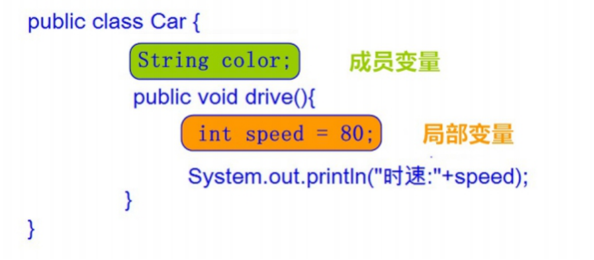

day06【类与对象、封装、构造方法】今日内容教学目标第1章 面向对象思想1.1 面向对象思想概述概述举例特点1.2 类和对象什么是类什么是对象类与对象的关系1.3 类的定义事物与类的对比类的定义格式1.4 对象的使用对象的使用格式成员变量的默认值1.5 类与对象的练习1.6 对象内存图一个对象，调用一个方法内存图两个对象，调用同一方法内存图一个引用，作为参数传递到方法中内存图1.7 成员变量和局部变量区别第2章 封装2.1 封装概述概述原则2.2 封装的步骤2.3 封装的操作——private关键字private的含义private的使用格式2.4 封装优化1——this关键字this的含义this使用格式2.5 封装优化2——构造方法构造方法的定义格式注意事项2.6 标准代码——JavaBean
能够理解面向对象的思想
能够明确类与对象关系
能够掌握类的定义格式
能够掌握创建对象格式，并访问类中的成员
能够完成手机类的练习
能够理解对象的内存图
能够说出成员变量和局部变量的区别
能够理解private关键字的含义
能够说出this关键字可以解决的问题
能够理解构造方法的含义
能够用封装的思想定义一个标准类
Java语言是一种面向对象的程序设计语言，而面向对象思想是一种程序设计思想，我们在面向对象思想的指引下， 使用Java语言去设计、开发计算机程序。这里的对象泛指现实中一切事物，每种事物都具备自己的属性和行为。面向对象思想就是在计算机程序设计过程中，参照现实中事物，将事物的属性特征、行为特征抽象出来，描述成计算机事件的设计思想。它区别于面向过程思想，强调的是通过调用对象的行为来实现功能，而不是自己一步一步的去 操作实现。
洗衣服:
面向对象思想是一种更符合我们思考习惯的思想，它可以将复杂的事情简单化，并将我们从执行者变成了指挥者。 面向对象的语言中，包含了三大基本特征，即封装、继承和多态。
环顾周围，你会发现很多对象，比如桌子，椅子，同学，老师等。桌椅属于办公用品，师生都是人类。那么什么是 类呢？什么是对象呢？
现实世界的一类事物： 属性：事物的状态信息。 行为：事物能够做什么。 Java中用class描述事物也是如此： 成员变量：对应事物的属性 成员方法：对应事物的行为
xxxxxxxxxxpublic class ClassName { //成员变量 //成员方法 }xxxxxxxxxxpublic class Student { //成员变量 String name；//姓名 int age；//年龄 //成员方法 //学习的方法 publicvoid study() { System.out.println ("好好学习，天天向上"); } //吃饭的方法 publicvoid eat() { System.out.println ("学习饿了要吃饭"); }}创建对象： 类名 对象名 = new 类名(); 使用对象访问类中的成员: 对象名.成员变量； 对象名.成员方法()； 对象的使用格式举例:
xxxxxxxxxx public class Test01_Student { public static void main(String[] args) { //创建对象格式：类名 对象名 = new 类名(); Student s = new Student(); System.out.println ("s:"+s); //cn.itcast.Student@100363 //直接输出成员变量值 System.out.println ("姓名："+s.name); //null System.out.println ("年龄："+s.age); //0 System.out.println ("‐‐‐‐‐‐‐‐‐‐"); //给成员变量赋值 s.name = "赵丽颖"; s.age = 18; //再次输出成员变量的值 System.out.println ("姓名："+s.name); //赵丽颖 System.out.println ("年龄："+s.age); //18 System.out.println ("‐‐‐‐‐‐‐‐‐‐"); //调用成员方法 s.study(); // "好好学习，天天向上" s.eat(); // "学习饿了要吃饭" } }|数据类型| 默认值 --- | --- 基本类型| 整数（byte，short，int，long）| 0 |浮点数（float，double）| 0.0 |字符（char）| '\u0000' |布尔（boolean）| false 引用类型| 数组，类，接口| null
定义手机类：
xxxxxxxxxx public class Phone { // 成员变量 String brand; //品牌 int price; //价格 String color; //颜色 // 成员方法 //打电话 public void call(String name) { System.out.println ("给"+name+"打电话"); } //发短信 public void sendMessage() { System.out.println ("群发短信"); }}定义测试类：
xxxxxxxxxx public class Test02Phone { public static void main(String[] args) { //创建对象 Phone p = new Phone(); //输出成员变量值 System.out.println ("品牌："+p.brand);//null System.out.println ("价格："+p.price);//0 System.out.println ("颜色："+p.color);//null System.out.println ("‐‐‐‐‐‐‐‐‐‐‐‐"); //给成员变量赋值 p.brand = "锤子"; p.price = 2999; p.color = "棕色"; //再次输出成员变量值 System.out.println ("品牌："+p.brand);//锤子 System.out.println ("价格："+p.price);//2999 System.out.println ("颜色："+p.color);//棕色 System.out.println ("‐‐‐‐‐‐‐‐‐‐‐‐"); //调用成员方法 p.call("紫霞"); p.sendMessage(); }}通过上图，我们可以理解，在栈内存中运行的方法，遵循"先进后出，后进先出"的原则。变量p指向堆内存中 的空间，寻找方法信息，去执行该方法。 但是，这里依然有问题存在。创建多个对象时，如果每个对象内部都保存一份方法信息，这就非常浪费内存了，因为所有对象的方法信息都是一样的。那么如何解决这个问题呢？请看如下图解。
对象调用方法时，根据对象中方法标记（地址值），去类中寻找方法信息。这样哪怕是多个对象，方法信息 只保存一份，节约内存空间。
引用类型作为参数，传递的是地址值。
变量根据定义位置的不同，我们给变量起了不同的名字。如下图所示： 
面向对象编程语言是对客观世界的模拟，客观世界里成员变量都是隐藏在对象内部的，外界无法直接操作和修改。 封装可以被认为是一个保护屏障，防止该类的代码和数据被其他类随意访问。要访问该类的数据，必须通过指定的 方式。适当的封装可以让代码更容易理解与维护，也加强了代码的安全性。
将属性隐藏起来，若需要访问某个属性，提供公共方法对其访问。
1.使用 private 关键字来修饰成员变量。 2.对需要访问的成员变量，提供对应的一对 getXxx 方法 、 setXxx 方法。
1.private是一个权限修饰符，代表最小权限。 2.可以修饰成员变量和成员方法。 3.被private修饰后的成员变量和成员方法，只在本类中才能访问。
xxxxxxxxxx private 数据类型 变量名 ；1. 使用 private 修饰成员变量，代码如下： public class Student { private String name; private int age;}2. 提供 getXxx 方法 / setXxx 方法，可以访问成员变量，代码如下： public class Student { private String name; private int age; public void setName(String n) { name = n; } public String getName() { return name; } public void setAge(int a) { age = a; } public int getAge() { return age; }}我们发现 setXxx 方法中的形参名字并不符合见名知意的规定，那么如果修改与成员变量名一致，是否就见名知意了呢？代码如下：
xxxxxxxxxx public class Student { private String name; private int age; public void setName(String name) { name = name; } public void setAge(int age) { age = age; }}经过修改和测试，我们发现新的问题，成员变量赋值失败了。也就是说，在修改了 setXxx() 的形参变量名后，方法并没有给成员变量赋值！这是由于形参变量名与成员变量名重名，导致成员变量名被隐藏，方法中的变量名，无法访问到成员变量，从而赋值失败。所以，我们只能使用this关键字，来解决这个重名问题。
this代表所在类的当前对象的引用（地址值），即对象自己的引用。
记住 ：方法被哪个对象调用，方法中的this就代表那个对象。即谁在调用，this就代表谁。
xxxxxxxxxx this.成员变量名；使用 this 修饰方法中的变量，解决成员变量被隐藏的问题，代码如下：
xxxxxxxxxx public class Student { private String name; private int age; public void setName(String name) { //name = name; this.name = name; } public String getName() { return name; } public void setAge(int age) { //age = age; this.age = age; } public int getAge() { return age; }}小贴士：方法中只有一个变量名时，默认也是使用 this 修饰，可以省略不写。
当一个对象被创建时候，构造方法用来初始化该对象，给对象的成员变量赋初始值。
小贴士：无论你与否自定义构造方法，所有的类都有构造方法，因为Java自动提供了一个无参数构造方法，一旦自己定义了构造方法，Java自动提供的默认无参数构造方法就会失效。
xxxxxxxxxx 修饰符 构造方法名(参数列表){ // 方法体}构造方法的写法上，方法名与它所在的类名相同。它没有返回值，所以不需要返回值类型，甚至不需要void。使用 构造方法后，代码如下：
xxxxxxxxxx public class Student { private String name; private int age; // 无参数构造方法 public Student() {} // 有参数构造方法 public Student(String name,int age) { this.name = name; this.age = age; }}1.如果你不提供构造方法，系统会给出无参数构造方法。 2.如果你提供了构造方法，系统将不再提供无参数构造方法。 3.构造方法是可以重载的，既可以定义参数，也可以不定义参数。
JavaBean 是 Java语言编写类的一种标准规范。符合 JavaBean 的类，要求类必须是具体的和公共的，并且具有无 参数的构造方法，提供用来操作成员变量的 set 和 get 方法。
xxxxxxxxxx public class ClassName{ //成员变量 //构造方法 //无参构造方法【必须】 //有参构造方法【建议】 //成员方法 //getXxx() //setXxx()}编写符合 JavaBean 规范的类，以学生类为例，标准代码如下：
xxxxxxxxxxpublic class Student { //成员变量 private String name; private int age; //构造方法 public Student() {} public Student(String name,int age) { this.name = name; this.age = age; } //成员方法 publicvoid setName(String name) { this.name = name; } public String getName() { return name; } publicvoid setAge(int age) { this.age = age; } publicint getAge() { return age; }}测试类，代码如下：
public class TestStudent { public static void main(String[] args) { //无参构造使用 Student s= new Student(); s.setName("柳岩"); s.setAge(18); System.out.println (s.getName ()+"‐‐‐"+s.getAge()); //带参构造使用 Student s2= new Student("赵丽颖",18); System.out.println (s2.getName()+"‐‐‐"+s2.getAge()); }}